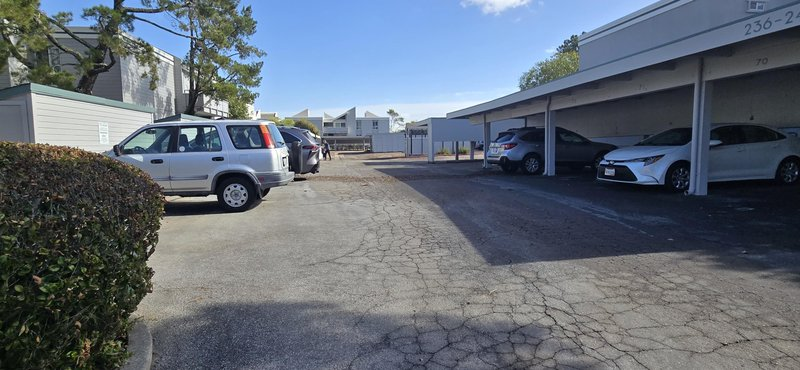
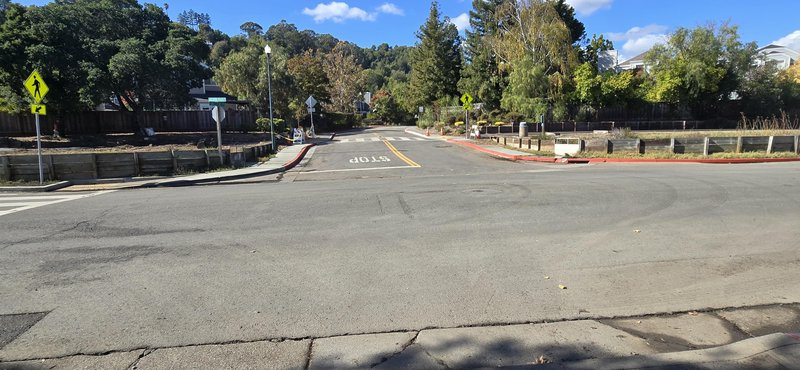
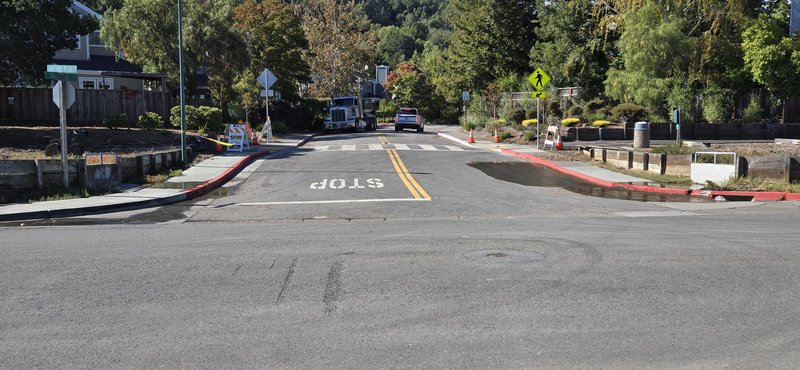
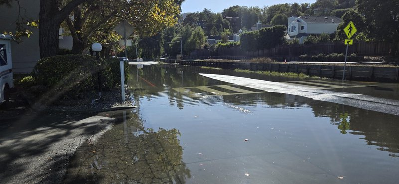
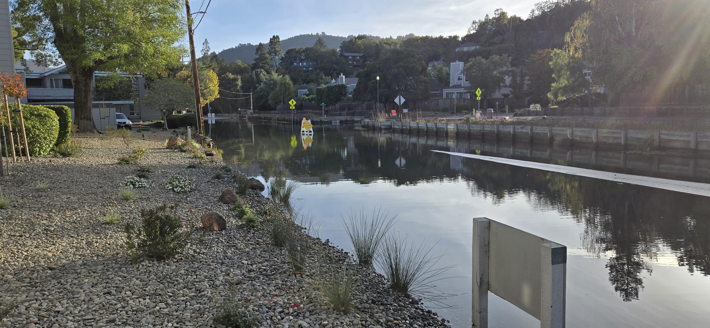

🌊
Larkspur WET
Weather • Event • Tide & FloodWatch
📱 Install as Android App on your Home Screen!
Crosswalk Sag Impassable for Small Cars
Water over the crosswalk dip exceeds 5.9 inches ground clearance. Road impassable for small cars and low-clearance sedans.
ESTIMATED SMALL CAR CLEARANCE:
Calculating...
Total Water Level
⬇️ FALLING
7.51 ft NAVD88
Station 9414874: 7.45' MLLW
Active Surge
KELVIN WAVE
+1.38 ft
Golden Gate Observed vs Ast
Road Crown (Sag Dip: 6.95')
SUBMERGED
+2.4 in water
Lowest dip crown (Full clear: 6.95')
Small Car Sag (5.9" CLR)
BREACHED
-0.0 in clr
Dip water depth: 5.4 in
11:00 AM
1:04 PM
1:33 PM
2:43 PM
3:24 PM
6:45 PM
🚗 Road Cross-Section & Small Car Clearance Simulator
TWL: 7.73 ft
View:
📈 48-Hour Tide & Surge Forecast (Larkspur #9414874)
NOAA Live
📸 Oct 30 Ground-Truth Photo Calibration
Andy's Field Sequence

11:42 AM • Road Dry (3.2')

1:04 PM • Gutter Seep (6.70')

1:33 PM • Gutters Wet (7.05')

2:43 PM • Impassable Sag (7.55')

4:53 PM • Sag Still Flooded (7.03')
📋 Calibrated Elevation Thresholds
| Feature / Benchmark |
Elevation |
Status / Impact |
| Street Gutter Inverts |
6.70 ft |
Water begins seeping into curb gutters (1:04 PM) |
| Lowest Crown in Sag Dip |
6.95 ft |
True All-Street Clearance (Road covered in salt water until < 6.95') |
| High Road Crown (Foreground) |
7.31 ft |
High ridge exposed, but sag dip ahead remains submerged (4:53 PM photo) |
| Small Car Impassable (Sag) |
7.55 ft |
Travel lane depth ≥ 5.9" (Ground truth: 2:43 PM) |
| Carport Stall #86 Floor (GL) |
7.75 ft |
Concrete floor. Kept dry today (peak was 7.70 ft) |
| Carport Door Sill Damage Level |
8.46 ft |
+8.5" above carport GL where water enters parked car interior |
| SUV / Truck Impassable |
7.85 ft |
High clearance vehicles ≥ 9" ground clearance |